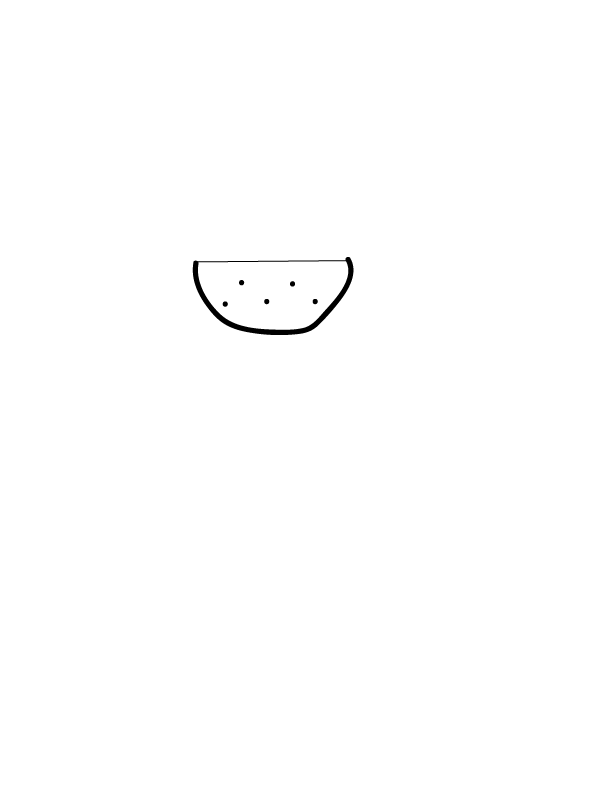
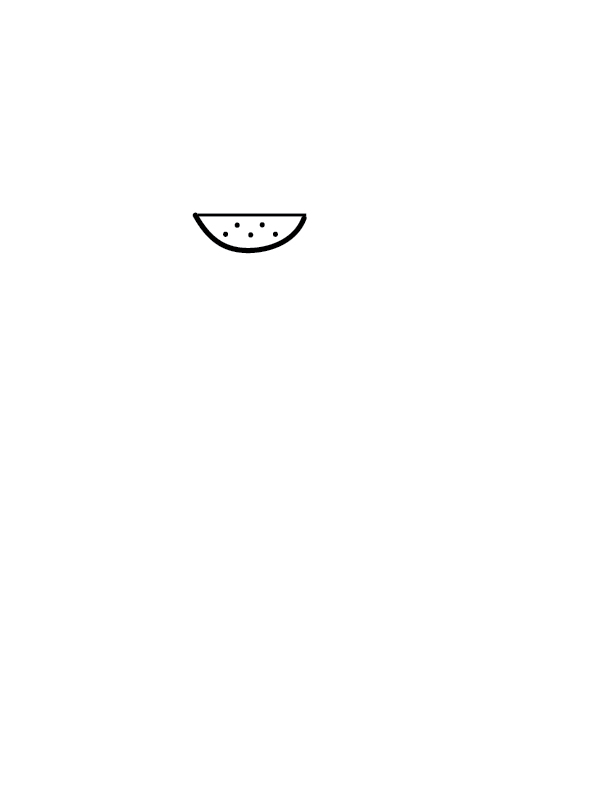
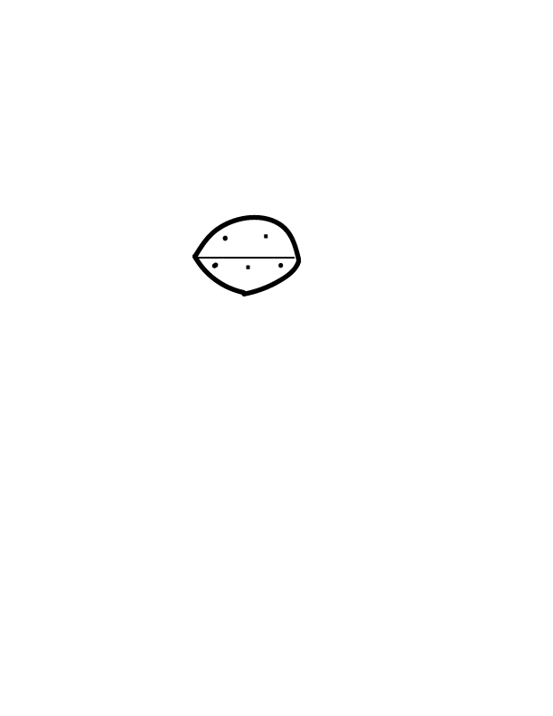

Instructions for Adobe Illustrator Drawing
- Open Adobe Illustrator
- Select the letter template 612 x 792 pt
- About 3 inches down the page, use the line segment tool an draw a line that is about 1 1/2 inches long horizontally (long ways). The line should be black. Make sure the line is very close to the center looking at the left and right, make it about 1/2 inch closer to the left margin, leaving more room on the right.
- Now that you have drawn the line, use the paintbrush tool to draw an arch (a smiley face shape) underneath the line, connecting both ends of the arch to both ends of the line. The paint brush tool settings shoud be 5 pt. round, uniform, 1 pt. stroke and the color black. Make sure that the top of the arch is about 1/2 away from the line. This should leave you with a semi-circle shape.
- Now that the semi-cicle shape is finished, stay on the paintbrush tool and keep the settings the way they are. Draw 5 dots inside of the semi-circle. Space them out very evently in a zig-zag formation, 2 dots on top and 3 dots on the bottom. It should go, bottom dot, top dot, bottom dot, top dot, bottom dot. To make the dots, just click in the place the dot goes with the mouse, it should make a small, round dot when you do this. Each dot should be about 2 centimeters apart and be in the very center between the top and bottom of the semi-circle. The two outer bottom dots should be only about a half a centimeter from the arch sides.
- When you are one, the top 2 dots should have the ability to connect to make a horizontal line and the bottom 3 dots should connnect to make a longer hoizontal line. Both lines should be parallel to one another, if you were to connect all of the dots from left to right, they should make an "M" shape. However, do not connect the dots with any lines, just keep the dots as they are in the previous step.
- Then when you are finished the picture, make sure you email it to me. msiperko@masonlive.gmu.edu.
You have now finshed the picture!
Original


